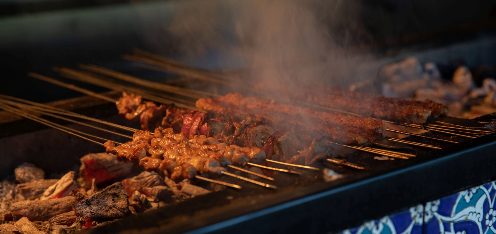
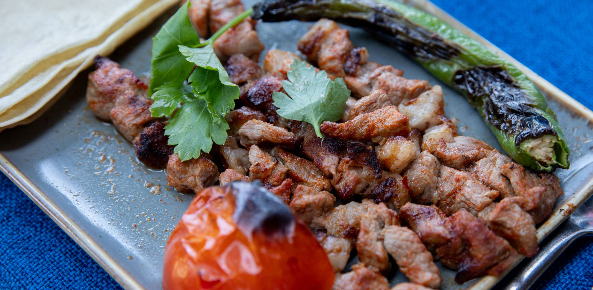
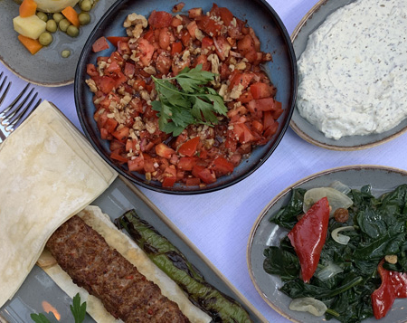
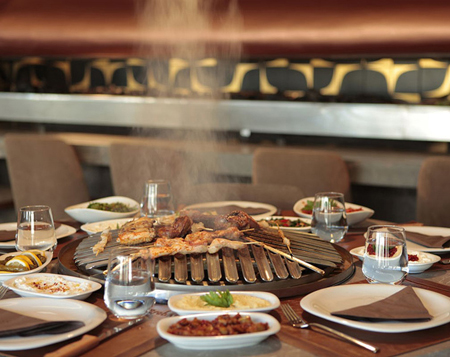
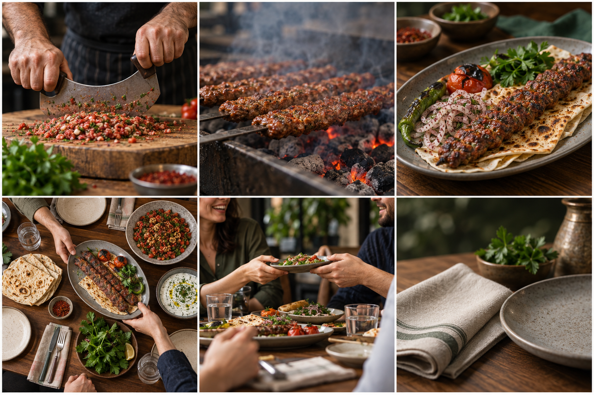

Hatırlanacak bir neden
Ürünü, ustalığı ve paylaşımı birbirine bağlayan bir hikâye, yemek planı yapılırken Köşebaşı'nın akla gelmesini hedefler.
Köşebaşı Merkez Yönetimine · Eylül 2026
Tek çatı hikâye.
Bütün markaya değer.
Köşebaşı'nın ustalığını, ürününü ve sofra kültürünü tek bir hikâyede birleştiren; bütün franchise ağının yararlanabileceği bir iletişim önerisi.
Yaklaşımı keşfedin
01 / Stratejik yaklaşım
Franchise sahiplerinin görünürlük talebinin arkasında, restoranlarının daha çok tercih edilmesi beklentisi var.
Merkezi iletişimin görevi, bu beklentiyi Köşebaşı'nı seçmek için güçlü bir neden etrafında birleştirmek: hazırlanışına tanık olunan bir ürün, görülen bir ustalık ve katılmak istenen bir sofra.
Çatı hikâye bu ortak nedeni kurar. Birbirini tamamlayan filmler ve fotoğraflar, Köşebaşı adına duyulan ilgiyi yıl boyunca besler. Üretilen materyaller bütün ağın kullanımına açılır.
Her şube için ayrı fotoğraf veya video çekimi yapılmayacak. Çekim mekânları senaryonun, mutfağın ve prodüksiyonun ihtiyaçlarına göre seçilecek. Filmlerin kahramanı Köşebaşı markası olacak.
Ürünü, ustalığı ve paylaşımı birbirine bağlayan bir hikâye, yemek planı yapılırken Köşebaşı'nın akla gelmesini hedefler.
Hazırlık ve kurulum için ayrılan emek; senaryo, ışık, yemek stilistliği, ses ve kurgu etrafında birlikte çalışır.
Aynı yaratıcı yatırım ana marka hesabında yayınlanır; mevcut franchise hesaplarının da yararlanabileceği bir içerik bankasına dönüşür.
02 / Merkezin franchise görüşmeleri için
Bir şubenin filmde görünmesi ile o şubenin iletişimden yararlanması farklı şeylerdir. Merkez ekibi bu ayrımı şu ziyaret yolu üzerinden anlatabilir.
Instagram'da Köşebaşı'nın filmini izler. Ustanın hazırlığını, ocağı ve sofradaki paylaşımı görür.
Bir sonraki yemek planında, gördüğü ürün ve sofra Köşebaşı'nı hatırlamasına yardımcı olur.
Seçtiği şube filmde hiç görünmemiş olabilir. Tercih etmek istediği marka, o işletmenin tabelasındadır.
Bu akış, oluşturmayı hedeflediğimiz ziyaret yolunu örnekler. Sonuçlar içeriğin dağıtımına, yerel talebe ve şubedeki deneyime de bağlıdır.
4 blok × en az 25 içerik
4 blok × 3 günlük üretim
Planlı yayın ve raporlama
Mevcut hesaplara ortak materyal
100 içerik, bütün marka için yıllık asgari toplamdır. Şube başına bir teslim veya hesap yönetimi taahhüdü değildir.
Görüşme dayanakları
Her açıklamayı bir senaryo, takvim, içerik örneği veya rapor başlığıyla somutlaştırıyoruz.
Ortak film, işletmenizin de taşıdığı Köşebaşı adına ilgi oluşturmayı hedefler. Misafir, yemek planında markayı düşündüğünde kendisine uygun şubeyi seçebilir. Çekim yapılan adres, bütün markayı anlatan hikâyeye ev sahipliği yapar.
Gösterilecek dayanak: Örnek ziyaret yolu ve ortak marka imzasıyla biten ana film akışı.
Merkezden düzenli yayınlanan bir marka iletişimi; mevcut şube hesaplarının da kullanabileceği onaylı filmler, fotoğraflar ve yayın metinleri. Ortak içerik bankası yıl içinde dört üretim bloğuyla yenilenir.
Gösterilecek dayanak: En az 100 yıllık ortak içerik, paylaşım düzeni ve üç aylık Instagram takvimi.
Yer seçimini senaryo, mutfak koşulları, ışık, ses ve çekim erişimi belirler. Seçilen mekânda üretilen işler merkezden Köşebaşı adına yayınlanır ve ağın ortak kullanımına açılır.
Gösterilecek dayanak: Mekân seçim ölçütleri, çekim listesi ve ortak marka kapanışı.
Çatı hikâye; ürün, ustalık ve sofra üzerine farklı bölümler üretir. Mevsim, ürün ve sahne değişirken renk, ses ve kadraj dili Köşebaşı'yla kurulan bağı korur.
Gösterilecek dayanak: Üç içerik serisi, moodboard ve bir bloktaki 25 içeriğin dağılımı.
Yayınlar, erişim, izlenme süresi, paylaşım ve kaydetmeler raporlanır. Erişilebilir verilerle menü, şube listesi ve rezervasyon kanallarına yönelme de değerlendirilir. Rezervasyon ve satış sonuçları, iletişimle kaynak bağlantısı kurulabildiği ölçüde ayrıca ele alınır.
Gösterilecek dayanak: Aylık rapor ve merkezle belirlenecek veri takibi. Erişim veya tıklama, gerçekleşmiş ziyaret olarak raporlanmaz.
Merkezin toplantıda kullanabileceği anlatım
Köşebaşı'nın ustalığını, ürününü ve sofrasını insanların aklında kalacak bir hikâyeye dönüştürmeyi öneriyoruz. Amacımız, yemek planı yapan kişinin Köşebaşı'nı düşünmesi. O kişi kendisine uygun şubeyi seçtiğinde, ortak marka iletişimi o işletme için de çalışabilir.
Çekim yerini senaryonun ihtiyacına göre belirleyeceğiz. Üretilen işler Köşebaşı adına yayınlanacak ve mevcut şube hesaplarının da kullanabileceği ortak bir bankada toplanacak. Böylece aynı prodüksiyondan bütün ağ yararlanabilecek.
03 / Yaratıcı yön
Köşebaşı'nın resmî anlatısı, 1995'te Levent'te başlayan geçmişini ve Adana–Tarsus mutfağıyla bağını öne çıkarıyor. Bu zeminden çıkardığımız yaratıcı yön, mutfak usullerini günümüzün şehirli sofra anlarıyla birlikte göstermek.
Marka kaynağı: Köşebaşı / Hakkımızda ↗Bir buluşma kararlaştırılırken mutfakta hazırlık başlar. Birileri masaya yaklaşırken tabaklar tamamlanır. Hikâye, ocağın başındaki emekten sofranın etrafındaki insanlara uzanır.
Hazırlanan masa, yaklaşan eller. Mutfaktan gelen hazırlık sesi.
Ustanın eli, malzeme, hazırlık. Gerçek mutfak sesleri.
Pişme, ürünün dokusu, tabaklama ve servise uzanan hareket.
Ortaya gelen tabaklar, paylaşım ve sofranın tamamlanması.
Ortak marka imzası.
Çatı fikir ve film akışı yaratıcı öneridir. Ürün, kaynak ve ustalık iddiaları senaryo kesinleşmeden önce merkez ekibi tarafından doğrulanır.
Hazırlık, usul ve ocak üzerine kısa filmler. Bir tabağın arkasındaki emeği görünür kılan ayrıntılar.
Malzemeden tabağa uzanan ürün ve meze hikâyeleri. Doku, renk, pişme ve sunum.
Servis, paylaşım ve buluşma anları. Ürünün insanları bir araya getirdiği küçük hareketler.
04 / Görsel dünya
Ürünün ve emeğin ön planda olduğu, özenli ve güncel bir gastronomi dili. Görsel araştırmanın çıkış noktası, Köşebaşı'nın kendi arşivindeki ocak, ürün ve ortak sofra.

Doğal ürün rengi, pişme ve mat seramik. Yakın plan anlatının çıkış noktası.
Köşebaşı / Resmî fotoğraf ↗
Birbirini tamamlayan tabaklar ve doğal renkler. Paylaşımı taşıyan tepeden kadraj.
Köşebaşı / Resmî fotoğraf ↗
Ustalık ile buluşmanın aynı kadrajda yer alması. Çatı fikrin markadaki görsel karşılığı.
Köşebaşı / Resmî fotoğraf ↗Bu fotoğraflar marka araştırması için Köşebaşı'nın resmî sitesinden alınmıştır; intiba tarafından üretilmiş çalışma örnekleri değildir.
Önerilen çekim estetiği

Palet, mevcut kurumsal kimlikle birlikte uygulanacak fotoğraf ve ışık önerisidir.
Tabakta yumuşak yan ışık; ocakta kontrollü arka ışık. Mat seramik, keten ve ahşap. Doğal yemek ve ten renkleri.
Ustanın eli, servis ve tabak uzatma. Ürün yakın planları, masa yüksekliğinde insan anları ve tepeden sofra kadrajları.
Hazırlık, ocak ve servis sesleri. Ayrıntıya zaman tanıyan kurgu; ustalıktan paylaşıma uzanan akış.
05 / Ortak içerik bankası
Yılda dört kez, üç günlük odaklı üretim. Her blokta en az 25 ortak içerik; tek bir görsel dilin farklı bölümleri.
Çatı hikâyeyi kuran
45 saniyelik film
Ustalık, ürün ve sofra
üzerine bağımsız bölümler
Ürün, hazırlık ve
ortak sofra seçkileri
Her biri 2–3 kareden
oluşan yayınlar
25 içerik dağılımı öneridir. Dil ve en-boy oranı değişiklikleri ayrı ana içerik sayılmaz. Dikey 9:16, kare formatlar, TR + EN altyazı ve fotoğraf seçkisi mevcut teklifin teslim çerçevesindedir.
Hazırlık ve pişme sahneleri; gerçek mutfak sesleri.
Ana filmin servis, paylaşım ve insan sahneleri.
Kısa hikâyeler, ürün seçkisi ve tamamlayıcı planlar.
06 / Instagram'da uygulama
Merkez görüşmesi, ürün öncelikleri, çatı hikâye, moodboard, senaryo ve mekân seçimi.
Üç günlük çekim, ana film, ilk kurgular, fotoğraf seçkisi ve yayın hazırlığı.
Ürün, ustalık ve sofra serileri; ortak materyallerin franchise ağıyla paylaşılması.
İçerik bankasının yayını, etkili anlatıların değerlendirilmesi ve yeni ürün/sahne planı.
1. ay→4. ay→7. ay→10. ay
12. ayda yıllık değerlendirmeintiba
Strateji, senaryo, prodüksiyon, kurgu, ana Instagram hesabının yayın planı ve raporlama.
Köşebaşı merkez
Ürün ve sunum onayı, tekleştirilmiş geri bildirim, çekim koordinasyonu ve franchise ağıyla paylaşım. Yorum ve mesaj yanıtları marka ekibinde.
Yayın adedi, erişim, izlenme süresi, benzer uzunluktaki videolarda tamamlanma, paylaşım ve kaydetme raporlanır. Erişilebilir verilerle menü, şube listesi ve rezervasyon kanallarına yönelme değerlendirilir. Kaynak bağlantısı kurulabilen rezervasyon ve satış sonuçları ayrıca ele alınır.
07 / Mevcut teklifin uygulama modeli
Dört çekim bloğu ve 12 aylık Instagram yönetimi. Mevcut teklifteki üretim kapasitesini bu çatı hikâye etrafında kullanıyoruz.
| Kalem | Birim bedel | Yıllık karşılık |
|---|---|---|
| Instagram kanal yönetimi | 100.000 TL / ay | 1.200.000 TL |
| Üç günlük çekim bloğu | 250.000 TL / blok | 1.000.000 TL / 4 blok |
| Yıllık toplam | KDV hariç | 2.200.000 TL |
Kapsama dahil: Marka çalışması, içerik stratejisi, ekip ve ekipman, İstanbul içi ulaşım, yemek stilistliği, kurgu ve son işlem, içerik bankası ve raporlama.
Ayrıca bütçelendirilenler: Oyuncu/model, özel müzik lisansı, reklam ve medya harcaması, şehir dışı/yurt dışı çekim ve çekimde tüketilen ürün. Ana filmin gereksinimleri bu çerçevede kesinleşir.
Köşebaşı × intiba
Bir sofranın etrafında.
Bütün markanın aklında.
Ortak marka yatırımının değerini; güçlü işler,
açık bir kullanım modeli ve düzenli raporlarla görünür kılmak.